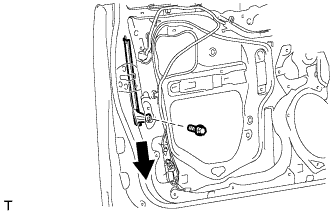
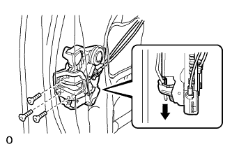
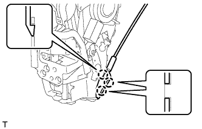

FRONT DOOR LOCK > REMOVAL |
| 1. DISCONNECT CABLE FROM NEGATIVE BATTERY TERMINAL |
| Condition | Waiting Time |
| Vehicle enrolled in G-BOOK system | 6 minutes |
| Vehicle not enrolled in G-BOOK system | 1 minute |
| 2. REMOVE FRONT DOOR LOWER FRAME BRACKET GARNISH LH |
 |
Detach the 2 clips and remove the front door lower frame bracket garnish LH.
| 3. REMOVE FRONT DOOR INSIDE HANDLE BEZEL PLUG LH |
 |
Using a moulding remover, detach the 3 claws and remove the inside handle bezel as shown in the illustration.
| 4. REMOVE FRONT ARMREST ASSEMBLY LH |
 |
Using moulding remover B, detach the 7 claws and 7 guides, and remove the front armrest assembly as shown in the illustration.
| 5. REMOVE POWER WINDOW REGULATOR MASTER SWITCH ASSEMBLY WITH FRONT DOOR BASE PANEL |
 |
Using a moulding remover B, detach the 2 clips, 4 claws and guide as shown in the illustration.
Disconnect the connector and remove the power window regulator master switch assembly with front door armrest base panel.
| 6. REMOVE FRONT DOOR TRIM BOARD SUB-ASSEMBLY LH |
 |
Remove the 2 screws.
Remove the 12 clips.
 |
Pull out the front door trim board sub-assembly in the direction indicated by the arrow in the illustration.
| *1 | Reference Boss |
Raise the front door trim board sub-assembly to detach the 4 claws and remove the front door trim board sub-assembly together with the front door inner glass weatherstrip LH.
Disconnect the 2 connectors.
 |
Disconnect the front door lock remote control cable assembly and front door inside locking cable assembly.
| 7. REMOVE FRONT DOOR INNER GLASS WEATHERSTRIP LH |
 |
Using a screwdriver, detach the 4 claws and remove the front door inner glass weatherstrip from the front door trim board sub-assembly as shown in the illustration.
| 8. REMOVE FRONT NO. 1 SPEAKER ASSEMBLY |
 |
Disconnect the speaker connector.
Remove the 4 screws.
Detach the 2 claws and remove the speaker.
| 9. REMOVE FRONT DOOR SERVICE HOLE COVER LH |
 |
Remove the bolt.
Detach the 2 clamps, move the wire harness out of the way and remove the service hole cover.
| 10. REMOVE FRONT DOOR GLASS SUB-ASSEMBLY LH |
Connect the cable to the negative (-) battery terminal.
Connect the power window regulator master switch assembly and move the front door glass sub-assembly so that the door glass bolts can be seen.
Disconnect the cable from the negative (-) battery terminal and power window regulator master switch assembly.
| Condition | Waiting Time |
| Vehicle enrolled in G-BOOK system | 6 minutes |
| Vehicle not enrolled in G-BOOK system | 1 minute |
 |
Remove the 2 bolts.
 |
Remove the front door glass sub-assembly as indicated by the arrows in the order shown in the illustration.
| 11. REMOVE FRONT DOOR GLASS RUN LH |
 |
Remove the front door glass run.
| 12. REMOVE FRONT DOOR REAR LOWER FRAME SUB-ASSEMBLY LH |
|  |
Remove the bolt and front door rear lower frame sub-assembly as shown in the illustration.
| 13. REMOVE FRONT DOOR OUTSIDE HANDLE COVER WITH LOCK CYLINDER ASSEMBLY |
 |
Remove the hole plug.
 |
Using a T30 "TORX" socket wrench, loosen the screw and remove the front door outside handle cover with lock cylinder assembly.
| 14. REMOVE FRONT DOOR LOCK ASSEMBLY LH |
Disconnect the connector.
|  |
Using a T30 "TORX" wrench, remove the 3 screws.
 | Slide |
Slide the front door lock assembly downward, pull out the front door lock open rod from the outside handle frame, and remove the front door lock assembly and cables as a unit.
Remove the front door lock open rod from the front door lock assembly.
Remove the door lock wiring harness seal from the front door lock assembly.
| 15. REMOVE FRONT DOOR LOCK REMOTE CONTROL CABLE ASSEMBLY LH |
 |
Remove the front door lock remote control cable assembly.
| 16. REMOVE FRONT DOOR INSIDE LOCKING CABLE ASSEMBLY LH |
|  |
Using a screwdriver, detach the 3 claws.
 |
Remove the front door inside locking cable assembly.